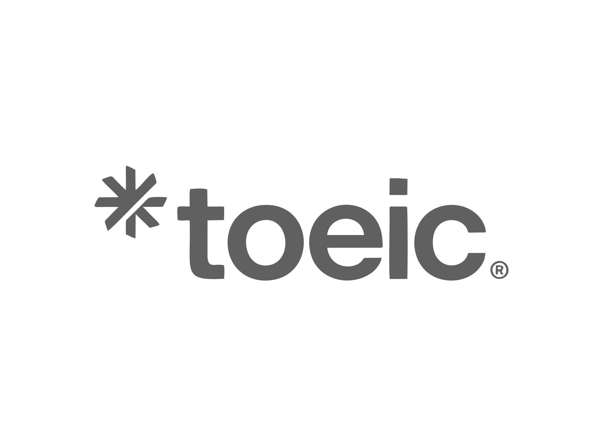
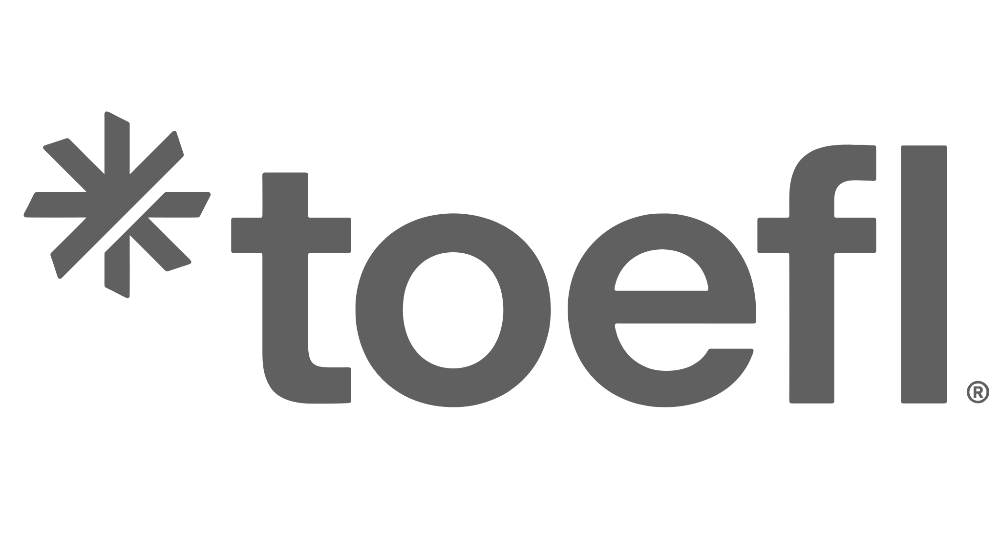

Pruebas internacionales
Certificá tu nivel de inglés con las pruebas
TOEIC® y TOEFL® reconocidas mundialmente.
Más de 80 años de trayectoria nos respaldan.

Certificación oficial ETS®
Reconocimiento en +160 países
+80 años de experiencia
Nuestros exámenes
Seleccioná el examen que necesitás para certificar tu nivel de inglés.
Hacé clic en la opción que te interesa para ver fechas y más detalles.

Público en general
TOEIC® Listening & Reading
Certificá tu comprensión auditiva y lectora en inglés
Ver detalles y fechasPúblico en general
TOEIC® Speaking & Writing
Demostrá tu capacidad de expresión oral y escrita en inglés.
Ver detalles y fechasMEP, Estudiantes CCCN, Público en general
TOEIC® Listening, Reading & Speaking
Evaluación integral de 3 habilidades comunicativas
Ver detalles y fechasPúblico en general
TOEIC Bridge®
Certificación para niveles iniciales e intermedios de inglés.
Ver detalles y fechas
Público en general
TOEFL ITP®
Evaluá tu inglés académico con reconocimiento mundial
Ver detalles y fechasPúblico en general
TOEFL iBT®
La prueba de inglés académico más reconocida del mundo.
Ver detalles y fechas